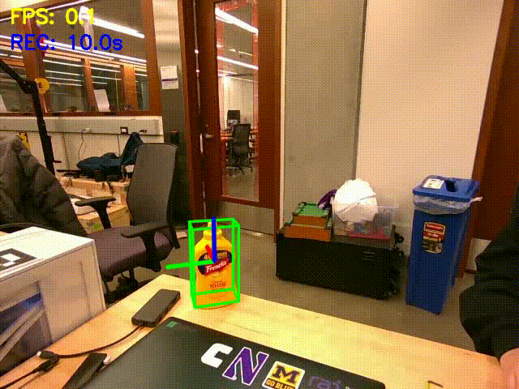
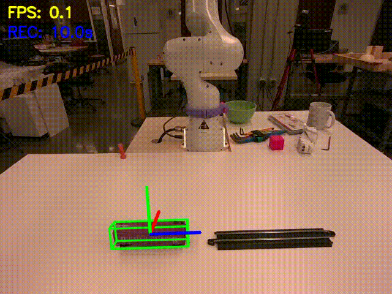
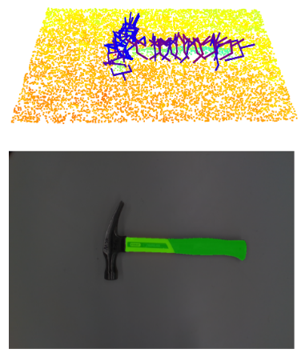
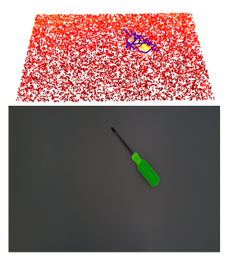

|
Open-vocabulary Manipulation System with Video Prediction Models and One-shot Pose Estimation |

Real World Deployment with RGB-D Video Generation
Overview |
|
My final project builds an end-to-end system for real-world robotic manipulation that turns natural language goals into reliable grasps on unseen objects. Given a text instruction (e.g., “put the mustard bottle on the plate”), the system identifies the target in RGB-D observations, segments it with SAM 2, reconstructs a localized 3D representation with SAM 3D and Any6D, and generates 6-DoF grasp candidates with GraspGen. It then selects and executes a grasp on a real robot arm, with robustness to partial views, clutter, and imperfect depth. The result is a modular pipeline that connects modern foundation models for language and vision with classical geometry and motion execution, enabling open-vocabulary “say what you want, grab what you mean” manipulation in the real world. |
Video Predictions |
|
I evaluate how well state-of-the-art video generation models can predict manipulation outcomes from visual context. I benchmark OpenAI Sora2, Google Veo3, and Kling 2.5 across several representative manipulation tasks, using the same prompts and task setups to enable a fair qualitative comparison. Below, I present the generated videos produced by each model for each task. Overall, the results indicate clear differences in physical plausibility and task consistency: both Veo3 and Kling 2.5 consistently produce strong performance, generating videos that better preserve object identity, maintain coherent contacts, and reflect more realistic action-conditioned changes across the manipulation sequences. |
Depth Video Estimation and Alignment |
|
In the Depth Video Estimation section, I evaluate how well learned depth video models can support real-world manipulation by calibrating their predicted depth sequences against a physical sensor reference. Concretely, I perform affine alignment between the predicted depth video and the first RGB-D frame from a RealSense camera (used as ground-truth scale and offset reference). I find that estimating a single set of affine parameters over the entire image is unreliable, but the alignment becomes effective when the parameters are fitted only within the manipulated object’s mask region. This suggests that depth predictions are substantially more stable in object-centric regions, likely reflecting the object-centric bias of many foundation vision datasets and training paradigms. I also compare VGGT and RollingDepth for video depth estimation. In practice, VGGT is harder to use as a video component due to weaker temporal behavior, while RollingDepth works well for video because it is explicitly designed for sequential inputs and produces stronger temporal consistency across frames. |
One-shot Pose Estimation |
|
In the One-shot Pose Estimation section, I build a single-image-to-6D pipeline by using SAM 3D as the image-to-mesh backbone and integrating it into Any6D for pose recovery in metric space. Specifically, I use SAM 3D to reconstruct a high-quality object mesh from a single RGB observation, then “hack” Any6D’s alignment stage to recover meter-scale geometry by anchoring the reconstruction to a given RGB-D reference frame (the anchor image provides the metric depth needed for scale). Any6D’s original image-to-3D module is based on InstantMesh + SAM2 for generating a normalized object shape from the anchor view, so I replace that InstantMesh backbone with SAM 3D. I previously experimented with other single-image reconstruction systems (e.g., TripoSR), but in practice these approaches tend to degrade when the object is partially visible or heavily occluded. In contrast, SAM 3D is explicitly positioned to perform well in natural scenes with occlusion and clutter, which makes it a better fit for manipulation scenarios where only a partial view is available. After swapping Any6D’s InstantMesh backbone with SAM 3D, the overall system produces stronger one-shot reconstructions and more reliable downstream pose alignment in real-world settings.   |
Grasping Poses Generation and Filtering |
|
In this module, I use GraspGen to generate diverse 6-DoF grasp candidates directly from the observed scene point cloud, leveraging its diffusion-based grasp synthesis (with scoring/ranking to prioritize high-quality grasps). To ensure the robot grasps functional regions (e.g., the handle of a knife rather than the blade), I combine Gemini 2.5 for language-driven functional-part identification and SAM 2 for promptable segmentation to produce a mask for the desired graspable part. Finally, I back-project each 6D grasp pose into the camera image and keep only grasps whose projected grasp point (and/or contact region) lies inside the functional-part mask, yielding task-relevant grasps that are both geometrically feasible and semantically appropriate.   |
Infrastructure |
|
For infrastructure, I run multiple foundation models on a shared server using conda/mamba environments to isolate dependencies (CUDA builds, Python versions, and conflicting libraries) while keeping installs reproducible and easy to switch between. Model services are exposed through a lightweight Flask-based API, and my local machine communicates with the server via custom Flask request/response protocols for inference, batching, and returning artifacts. As part of the final project, I also release a set of easy-to-use “foundation model server” repositories that package common models behind consistent endpoints so they can be plugged into the pipeline with minimal setup. |
|
Zhengxiao Han, 2025 |